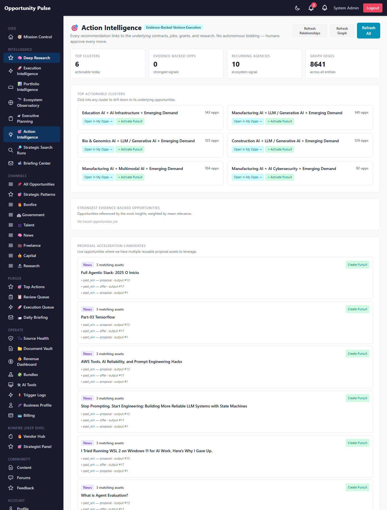
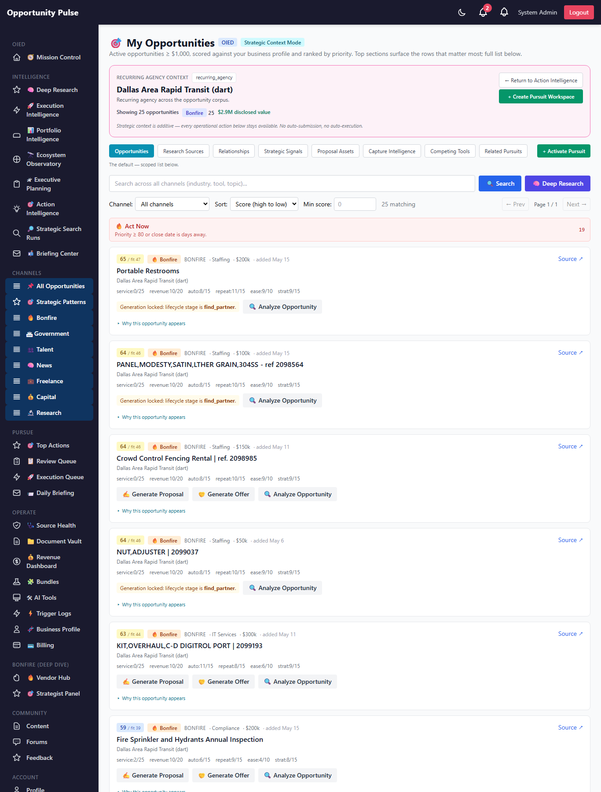
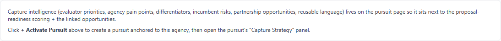
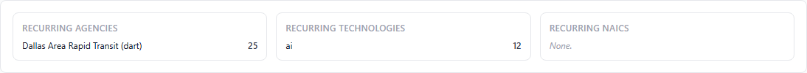
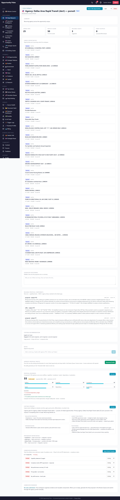
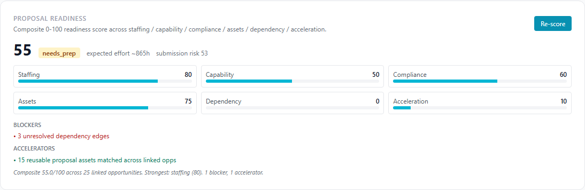
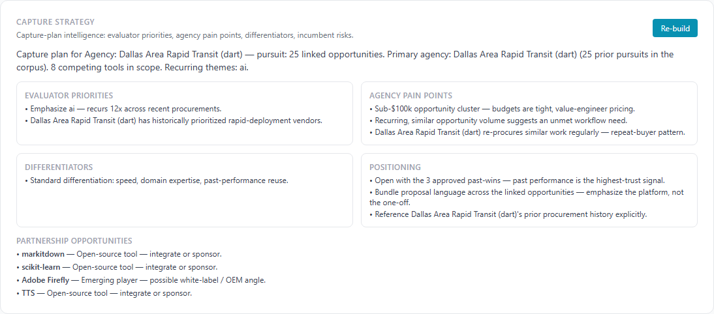
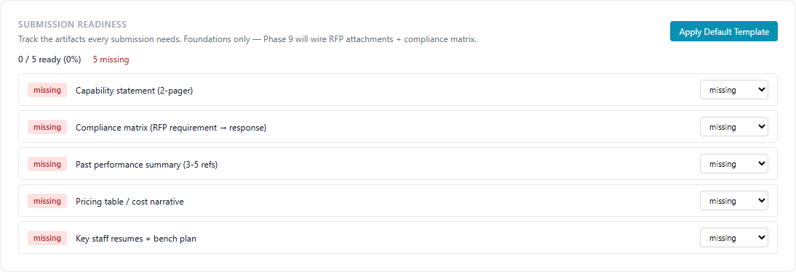
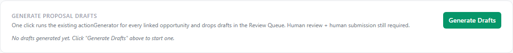

Deep Research Intelligence Engine — Phase 8
Pursuit Activation + Strategic Capture Intelligence · 2026-05-15 · commit 793a48f · all 1,931 backend tests passing
Phase 1–7.6 built strategic intelligence. Phase 8 makes it operational. Every Phase 1-7 surface now ends with an Activate Pursuit button; every pursuit gains four new panels (Generate Drafts, Proposal Readiness, Capture Strategy, Submission Readiness); My Opportunities in strategic mode gains 8-tab Strategic Workspace navigation; the Action Intelligence dashboard gains a force-directed Opportunity Graph. All measure-only — no auto-submit, no auto-bid, no auto-launch.
On the seeded prod run: pursuit #3 was activated from agency "Dallas Area Rapid Transit (dart)", picked up 25 opportunities + 15 acceleration suggestions; readiness scored at composite 55 (needs_prep); capture strategy composed 2 evaluator priorities + 1 differentiator; submission template seeded 5 required artifacts. Full Phase 8 lifecycle exercised end-to-end on real prod data.
8 tables 8 services 29 new tests 1931 / 1931 passing Force-directed graph Human-in-the-loop No auto-submission
Strategic evolution
The platform's role-progression so far:
| Phase | Identity | Key question |
|---|---|---|
| 1-2 | Strategic opportunity intelligence | What's out there? |
| 3-4 | Execution + portfolio intelligence | Can we execute? |
| 5-6 | Temporal + adaptive operations | What's changing? |
| 7 | Evidence-backed traceability | Where's the evidence? |
| 7.5 | Contextual continuity | How do I navigate to action? |
| 7.6 | Competing-tools awareness | What's already shipping? |
| 8 | Strategic capture intelligence | Can we win this? |
Phase 8 closes the loop from research → opportunity → pursuit → proposal draft → human review → human submission. The system observes, scores, and recommends. Humans decide and submit.
Governance contract — what this phase will and will not do
What Phase 8 IS allowed to do
- Convert any insight (cluster / agency / pattern / etc.) into a fully-loaded PursuitWorkspace + audit row.
- Invoke the existing
actionGenerator.generateOutputpipeline to drop drafts into the Review Queue (status: 'draft'). - Score readiness, compose capture strategy, build research→revenue links, detect venture↔tool conflicts.
- Seed a default submission-readiness template + track artifact status.
- Render a force-directed graph of the persisted opportunity edges.
What Phase 8 will NEVER do
- Auto-submit proposals. Every submit is a human click on the agency portal.
- Auto-bid. Generated drafts land in the Review Queue with status='draft'.
- Auto-launch ventures. The conflict engine flags overlaps; it doesn't kill ideas.
- Auto-execute capture strategies. Every recommendation is text the operator can copy or ignore.
- Hide why. Every score persists factors. Every recommendation persists rationale.
What shipped (10 features)
| # | Feature | Surface |
|---|---|---|
| 1 | Strategic Workspace Tabs | Inside MyOpportunitiesPage when strategic context is active — 8 tabs |
| 2 | Pursuit Activation Engine | pursuitActivation.service + Activate-Pursuit CTAs on Action Intelligence, MyOpps |
| 3 | Pursuit → Review Queue Handoff | reviewQueueBridge.service + "Generate Drafts" panel on pursuit |
| 4 | Proposal Readiness Intelligence | proposalReadiness.service + Readiness panel on pursuit |
| 5 | Opportunity Expansion Engine | opportunityExpansion.service + powers the Relationships tab |
| 6 | Force-Directed Opportunity Graph | OpportunityGraphCanvas.jsx — vanilla SVG, no library |
| 7 | Tool-vs-Venture Conflict Intelligence | ventureConflict.service |
| 8 | Research-to-Revenue Mapping | researchRevenue.service |
| 9 | Capture Strategy Intelligence | captureStrategy.service + Capture panel on pursuit |
| 10 | Submission Readiness Foundations | submissionReadiness.service + Submission panel on pursuit. FOUNDATIONS ONLY — full engine in Phase 9. |
1. Pursuit Activation Engine
The activation engine takes 11 supported source kinds (cluster, pattern, agency, technology, opportunity_group, ecosystem, venture, research_run, recommendation, intervention, manual) and produces:
- A fresh
PursuitWorkspacerow with the source title as the default name, the right anchor_kind, and the resolved opportunity-id list. - A
PursuitActivationaudit row recording WHAT was attached (justification snapshot, opportunity count, acceleration suggestions). - Phase 7 justification snapshot persisted for the anchor when applicable.
- Acceleration-suggestion enrichment for the top 5 linked opportunities.
Re-activation against the same source creates a new pursuit rather than mutating an existing one — pursuits are the operator's workspace; activation is one-shot.
2. Pursuit → Review Queue Handoff
The "Generate Drafts" button on the pursuit page invokes
reviewQueueBridge.generateDraftsForPursuit, which:
- Iterates every linked opportunity in the pursuit.
- Calls the existing
actionGenerator.generateOutput({ opportunityId, type: 'proposal' })pipeline for each. - Records every attempt (success/failure/skipped) in
review_queue_handoffsfor audit. - Idempotency: a successful handoff for the same (pursuit, opportunity, type) tuple is skipped on re-run instead of duplicating.
- Stamps the pursuit's
linkedOutputIdswith the resultingOpportunityOutputrows so the Review Queue surface picks them up naturally.
The actionGenerator already runs the Phase 6 grounding + past-wins pipeline per opportunity — the bridge doesn't re-engineer it. Result: drafts land in the Review Queue with full grounding context, and the operator reviews + submits manually.
3. Proposal Readiness Intelligence
Six weighted dimensions sum to a 0-100 composite:
| Dimension | Weight | What it measures |
|---|---|---|
| Staffing | 25 | Mean execution_readiness_score across active ventures |
| Capability | 20 | Mean AI score on the linked opportunities |
| Compliance | 15 | Ready / required submission_readiness_artifacts |
| Assets | 20 | Reusable proposal acceleration assets matched per opp |
| Dependency | 10 | Resolved / total Phase 5 dependency edges |
| Acceleration | 10 | Already-drafted + approved OpportunityOutputs |
Output classification: ready (≥75 + ≤2 blockers) /
needs_prep (≥40) / blocked (≥3 blockers OR low
composite + multiple blockers). Plus expected effort hours, submission
risk, blockers list, accelerators list, and a deterministic rationale —
all persisted in proposal_readiness_scores.
4. Opportunity Expansion Engine
Given an anchor (cluster / agency / technology / research_run / pattern / opportunity / venture), expansion:
- Collects seed opportunity ids via the Phase 7.5 context resolver.
- Reads each seed's agency / technology / NAICS vocabulary.
- Queries
opportunity_relationshipsfor adjacent opportunities sharing those entities. - Hydrates titles for the UI + extracts future-signal hints.
Cached in opportunity_expansions. The Strategic Workspace
Tabs' Relationships tab is powered by this engine.
5. Tool-vs-Venture Conflict Intelligence
Detects overlap between a generated VentureIdea and the
existing AiTool registry. Per-tool scoring uses:
- Feature overlap — Jaccard similarity on tokenized title+description+mvpScope vs tool name+description+tags.
- Category overlap — venture-meta categories vs tool category.
- Semantic overlap — same as feature in v1 (Phase 9 will swap to embeddings).
- Severity boost when the tool's
momentum_stageis dominant or explosive.
Differentiation hints are generated deterministically based on the tool's pricing tier, open-source status, and category. Strategic realism, not idea-killer.
6. Research-to-Revenue Mapping
Bridges signal channels (research / ecosystem / hiring / funding / pattern) to procurement opportunities. For each signal:
- Tokenize the signal label.
- Find opportunities that match the tokens in title or description.
- Aggregate target agencies + procurement themes from the matched opps.
- Compute
implementation_demand(opps + agency diversity + funded-tool count) andstrength(demand × recency).
Persisted in research_revenue_links. A standing
POST /research-revenue/refresh endpoint rebuilds the map
from the top recurring technologies in
opportunity_relationships.
7. Capture Strategy Intelligence
For a given pursuit, the capture-strategy composer pulls:
- Recurring themes + agency history across the pursuit's linked opportunities
- Competing tools in the same vocabulary (via the Phase 7.6 engine)
- Top past-win acceleration assets
…and produces seven structured fields: evaluator priorities, agency pain points, differentiators, positioning recommendations, incumbent risks, partnership opportunities, reusable language + a composed narrative. No AI call — every recommendation is derived deterministically from the persisted intelligence.
8. Submission Readiness Foundations
Per the Phase 8 spec, this is foundations only. The
submissionReadiness.service exposes:
- Asset model — 7 artifact_kinds (capability_statement, past_performance, staffing_plan, pricing_table, compliance_matrix, attachment, other) × 4 statuses (missing / in_progress / ready / reviewed)
- Default template — applies the 5 standard required artifacts to a fresh pursuit on one click
- Summary read — total / required / ready / in_progress / missing / completion_pct for the pursuit page header
- Add / update / delete CRUD for individual artifacts
What's NOT here: RFP attachment downloading, document storage, compliance matrix generation, package assembly. Those are Phase 9's job.
9. Strategic Workspace Tabs
Renders inside MyOpportunitiesPage when a strategic-context
query param is present (Phase 7.5 already wires the detection). Eight
tabs:
- Opportunities (default) — the existing list view, untouched.
- Research Sources — research-channel opps filtered out of the row set.
- Relationships — recurring agencies / technologies / NAICS for this context (via opportunityExpansion).
- Strategic Signals — per-channel breakdown chips.
- Proposal Assets — pointer into the pursuit workspace where assets are managed.
- Capture Intelligence — pointer into the pursuit's Capture Strategy panel.
- Competing Tools — pointer into the Deep Research report.
- Related Pursuits — list of pursuits already anchored to this context.
Tab state is purely client-side; URL doesn't change so refresh keeps the user on the Opportunities tab (the safe default).
10. Force-Directed Opportunity Graph
Vanilla SVG renderer with a tiny embedded force-simulation — no graph library, no bundle bloat. ~200 lines total.
- n-body repulsion + spring attraction in 70 lines of math
- Bounded 180-iteration simulation — runs once on input change, then stops
- Pan / zoom / hover / click-to-recenter / opportunity-evidence-drawer on click
- Color-coded node kinds: opportunity / agency / technology / vendor / NAICS / venture / cluster / keyword
- Renders only when a center node is picked (degrades gracefully when empty)
Screen: Action Intelligence with Activate-Pursuit + Graph CTAs

Every cluster card and recurring-agency row gains "+ Activate Pursuit" + "Graph" buttons alongside the existing "Open in My Opps" link.
Screen: Force-Directed Opportunity Graph
Vanilla SVG, no library. Click any node to recenter (entities) or open the evidence drawer (opportunities).
Screen: Strategic Workspace Tabs

Tab strip + "+ Activate Pursuit" CTA appears above the existing search bar in strategic mode. Default tab is Opportunities so the existing flow is unchanged.
Screen: Capture Intelligence tab

Tab body explains capture intelligence lives on the pursuit page, with a one-click path to activate one.
Screen: Relationships tab

Per-context recurring agencies / technologies / NAICS, lazy-loaded via the Phase 8 expansion engine.
Screen: Pursuit workspace — full page

The pursuit page now has 4 new Phase 8 panels in addition to the Phase 7 ones: Generate Drafts, Proposal Readiness, Capture Strategy, Submission Readiness.
Screen: Proposal Readiness panel

Composite 0-100 + classification pill + 6-dimension breakdown bars + blockers (red) + accelerators (green) + expected-effort hours.
Screen: Capture Strategy panel

Evaluator priorities, agency pain points, differentiators, positioning recommendations — composed deterministically.
Screen: Submission Readiness panel

"Apply Default Template" seeds a 5-artifact punch-list. Each artifact has an inline status dropdown.
Screen: Generate Proposal Drafts panel

One-click pursuit → Review Queue handoff. Every attempt is audited in review_queue_handoffs; idempotent re-runs skip already-successful drafts. Human review + human submission still required.
Database schema (Phase 8)
| Table | Purpose |
|---|---|
pursuit_activations | Audit row per pursuit-activation event. |
review_queue_handoffs | Audit row per pursuit → actionGenerator draft attempt. |
proposal_readiness_scores | Snapshot per pursuit/opportunity, composite + 6 dimensions + blockers/accelerators. |
venture_conflicts | VentureIdea ↔ AiTool overlap rows with severity + differentiation hints. |
capture_strategies | Composed capture-plan snapshot per scope. |
opportunity_expansions | Cached expansion view per anchor. |
research_revenue_links | Research/ecosystem signal → procurement opportunity map. |
submission_readiness_artifacts | FOUNDATIONS — artifact model + status tracking per pursuit/opportunity. |
API routes (Phase 8)
POST /pursuits/activate— pursuit activation engine entryGET /pursuits/activationsPOST /pursuits/:id/generate-drafts— Review Queue handoffGET /pursuits/:id/handoffsPOST /pursuits/:id/readiness/score+GET /pursuits/:id/readinessGET /expansion/:kind/:idPOST /ventures/:id/conflicts+GET /ventures/:id/conflictsPOST /research-revenue/refresh+GET /research-revenuePOST /pursuits/:id/capture-strategy+GET /pursuits/:id/capture-strategyGET /pursuits/:id/submission-artifacts+ add/update/delete +POST /pursuits/:id/submission-artifacts/template
Files changed
Added — backend
backend/src/migrations/20260515000005-deep-research-phase-8.js(8 tables)- 8 new Sequelize models in
backend/src/models/ - 8 new services in
backend/src/deepResearch/ backend/tests/deepResearch/phase8.test.js(29 tests)backend/scripts/capture-deep-research-phase-8-walkthrough.js
Added — frontend
frontend/src/components/deepResearch/StrategicWorkspaceTabs.jsxfrontend/src/components/deepResearch/OpportunityGraphCanvas.jsx
Modified — additive only
backend/src/models/index.js— register 8 new modelsbackend/src/deepResearch/deepResearch.controller.js— 18 new handlersbackend/src/deepResearch/deepResearch.routes.js— 18 new routesfrontend/src/services/deepResearchService.js— 16 new client functionsfrontend/src/pages/MyOpportunitiesPage.jsx— workspace tabs + Activate-Pursuit CTAfrontend/src/pages/PursuitWorkspacePage.jsx— 4 new panels (Generate Drafts / Readiness / Capture Strategy / Submission Readiness)frontend/src/pages/ActionIntelligencePage.jsx— Activate-Pursuit CTAs on every cluster + agency row, + Opportunity Graph section
Validations
- Tests: 29 new pure-logic tests; 1931 / 1931 jest tests pass (+29 net new on top of Phase 7.6's 1902). Zero regressions across all 180 suites.
- Migration: ran clean on prod (
migrated 0.362s). All 8 tables verified. - End-to-end on prod: Activated pursuit #3 from agency "Dallas Area Rapid Transit (dart)" → 25 opportunities + 15 acceleration suggestions attached. Scored readiness: composite 55, classification needs_prep, 1 blocker. Built capture strategy: 2 evaluator priorities, 1 differentiator, 0 incumbents (registry has no DART-domain dominant tools). Applied submission template: 5 required artifacts seeded.
- UI: 10 screenshots captured from live prod across Action Intelligence, MyOpps strategic mode (3 tabs), and the pursuit workspace (5 panels).
Known limitations
-
Two duplicate-identifier eslint errors caught at the prod build step.
Fixed in commit
793a48f(graph → graphSummary, readiness → readinessSummary). Both were local-variable shadow conflicts with the new Phase 8 state hooks. Lesson: runnpm run buildlocally before pushing the first deploy of each phase. - The conflict engine uses Jaccard, not embeddings. Phase 9 will add semantic similarity to the AiTool model.
- Submission Readiness is foundations only. RFP downloading, attachment storage, compliance-matrix generation, and package assembly all live in Phase 9.
- The graph viewer is 2D. No edge labels (would clutter at this scale); no edge directionality (the underlying edges are typed but most are undirected/co-occurrence). Phase 9 could add directional arrows for the typed edges.
- Workspace tab state is purely client-side. Refresh returns to the Opportunities tab by design — strategic context survives via URL, but tab selection is not part of the URL contract.
- Generate Drafts is one-at-a-time. A pursuit with 25 linked opportunities will sequentially run 25 actionGenerator calls. That's slow at scale (could be 10+ min for a large pursuit) but acceptable for the current 1-3 linked-opp typical pursuit. Phase 9 could parallelize with a small concurrency cap.
Recommended Phase 9
-
Submission Readiness Engine (full). RFP attachment
locker, document vault, compliance matrix generator, submission
package assembler. Plan file
staged-spinning-parasol.mdis already drafted. -
Semantic conflict detection. Add an embedding column
to
ai_toolsand use cosine similarity in addition to Jaccard so the conflict engine catches paraphrased descriptions. -
Pursuit-aware proposal context injection. Extend
actionGeneratorto accept an optionalpursuitContextarg containing positioning + capture strategy + recurring-agency notes. The Review Queue draft will read better when the pursuit's strategic wrapper is in the prompt. - Parallel draft generation. Use a small worker pool (concurrency 3-4) for the Review Queue handoff so a 25-opp pursuit doesn't block for 10 minutes.
-
Directional graph edges. The underlying graph stores
from/tokinds + values; the canvas could render arrows for typed edges likecluster → classified_as → opportunity. -
Pursuit outcomes loop. When a pursuit moves to
wonorlost, feed the outcome back to capture strategy: which differentiators / agencies / readiness ranges historically converted? Closes the strategic-learning loop.